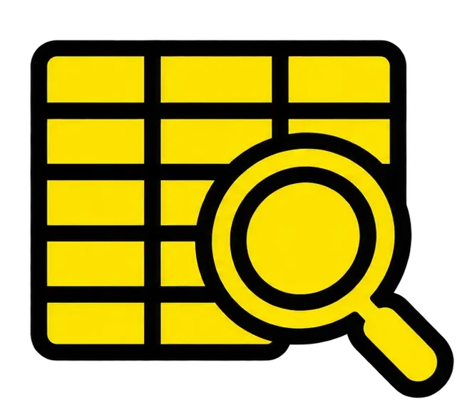
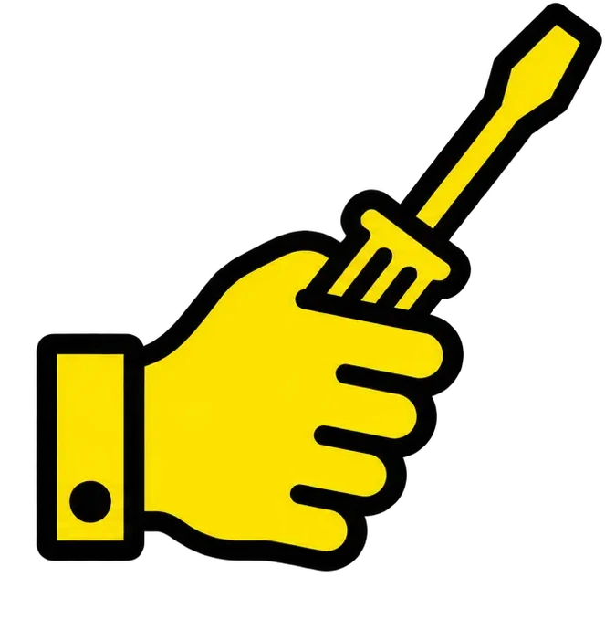
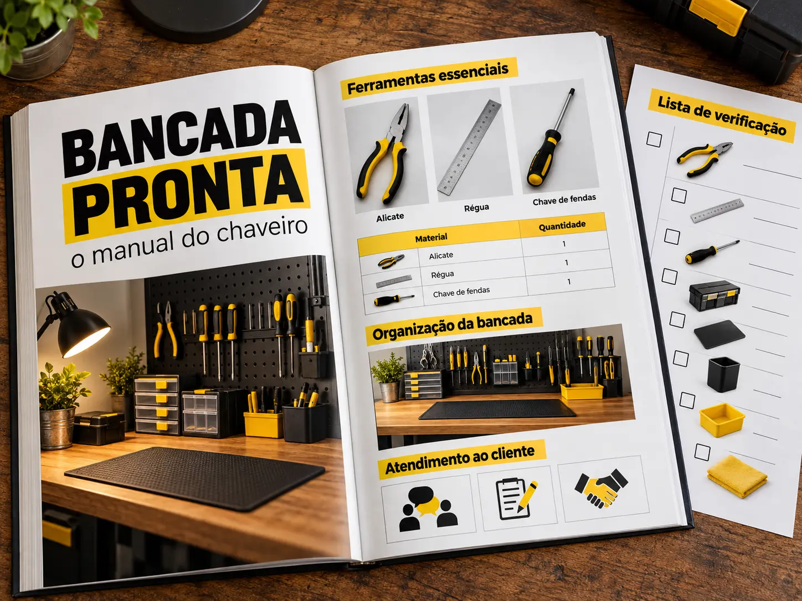
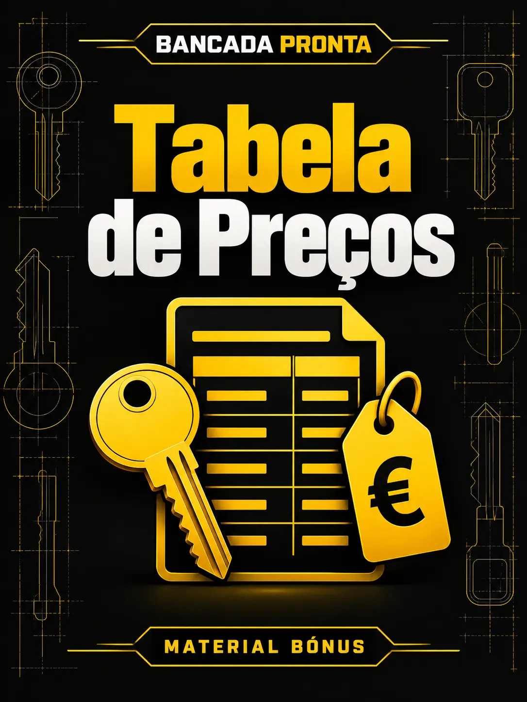
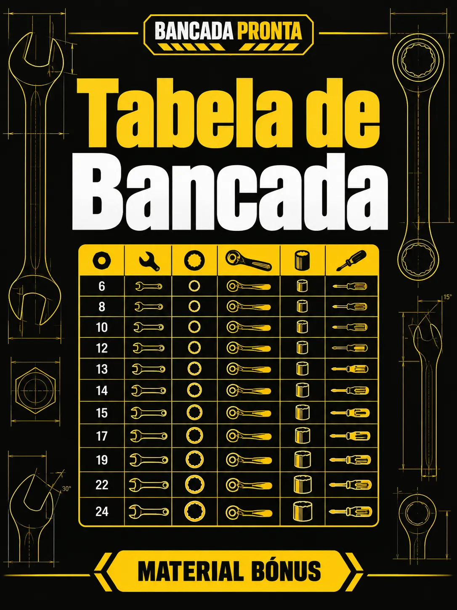
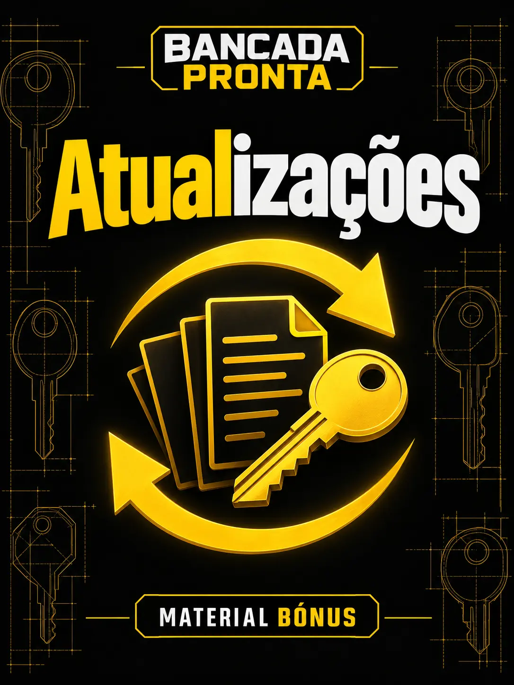

O manual de bancada do serralheiro (ou chaveiro, como lhe quiseres chamar): 15 capítulos práticos sobre fechaduras, carcaças, lâminas, transponders, comandos, máquinas de programação e preços, organizados para consultares no momento em que precisas.
QUERO O MEU MANUAL AGORAAcesso imediato · Garantia de 7 dias
Ele quer a chave pronta hoje e tu não tens a certeza de que chip usar, que lâmina cortar ou quanto cobrar.
Ou estás a começar e tens receio de gastar centenas de euros na máquina errada antes do primeiro cliente.
Os dois casos têm a mesma causa: falta de informação organizada. A informação existe, mas está espalhada por grupos, vídeos e fornecedores que te querem vender alguma coisa.
Este manual junta tudo num só sítio, pela ordem em que vais precisar.
Não é para quem procura uma fórmula de dinheiro fácil. O conteúdo é profissional e qualquer serviço exige autorização do proprietário.

img/icone-consultar.webpTabelas por marca, chip, lâmina e carcaça para encontrares a resposta em segundos.

img/icone-executar.webpPasso a passo de campo, com os erros de principiante já identificados em cada capítulo.
Uma lógica de preços por serviço para não trabalhares com prejuízo.
Não é um curso de 40 horas. É um manual de consulta: cada capítulo traz o que é, como se faz, as ferramentas com intervalo de preço, o erro mais comum e uma dica de campo.

PÁGINAS POR DENTROFormato: e-book digital em PDF, [inserir n.º de páginas] páginas, para ler no telemóvel ou imprimir e deixar na bancada.
SIM, QUERO O MANUAL COMPLETO
img/bonus-1.webpFolha de cálculo editável para ajustares à tua zona.
Modelo de declaração e lista de documentos a confirmar.

img/bonus-3.webpLâminas, chips e carcaças por modelo numa só página, para imprimir.
Plano de 30 dias para quem está a começar.

img/bonus-5.webpTabelas actualizadas durante [inserir prazo].
[inserir números reais e comprováveis, com um só período em toda a página]
Um único serviço mal feito, uma lâmina perdida ou um chip queimado já custa mais do que este manual. Uma máquina comprada sem necessidade custa centenas de euros.
de 39€ por apenas
Pagamento único · IVA incluído [confirmar]
QUERO O MEU MANUAL POR 19€🔒 Pagamento seguro · MB WAY · Multibanco · Cartão
Lê, consulta e usa na bancada. Se achares que não vale a pena, pede o reembolso na própria plataforma dentro de 7 dias e devolvemos 100% do valor, sem perguntas.
Sim. O capítulo 1 mostra por onde começar a gastar pouco.
O manual funciona como consulta rápida de automóvel e codificação, com tabelas por marca.
Não. O manual mostra o que se consegue fazer sem máquina e quando compensa comprar uma.
Não. É um e-book em PDF para consulta.
O acesso chega por e-mail assim que o pagamento for confirmado. Podes descarregar e ler no telemóvel, tablet ou computador.
Sim. [confirmar com a plataforma de pagamento: emissão de factura com NIF]
Não. Entrega conhecimento técnico; o resultado depende do teu trabalho e da tua zona.
Não. Todo o procedimento é para uso profissional, com autorização e confirmação da propriedade do cliente.
Sim, 7 dias, com reembolso total.
Podes continuar a dizer "esse não faço", ou podes ter o manual aberto na bancada e resolver o serviço. A informação que procuras nos grupos já está organizada aqui, por menos do que custa um serviço mal feito.
QUERO O MEU MANUAL AGORAAcesso imediato · Pagamento seguro · 7 dias de garantia